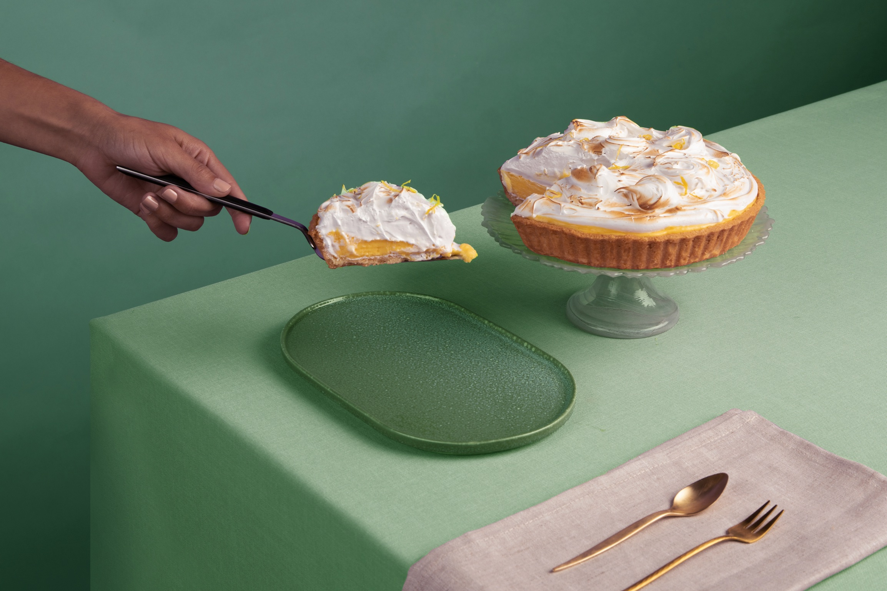
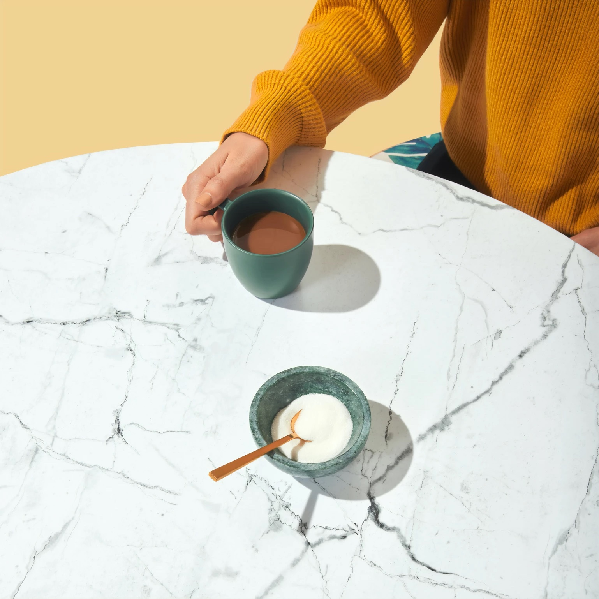

A commissary kitchen is a commercial kitchen where foodservice providers can safely and legally prepare, cook and store food.
Do I need to use a Commissary Kitchen?
If you want to start making food for sale to the public, you should contact your local health authority. As one of their requirements, all foods produced for sale must be produced in a licensed facility, not a home kitchen.
Tip: Local health authorities are super helpful; don't think twice about calling them if you have any questions.
What are the benefits of using a Commissary Kitchen?
- Cost saving: Setting up your own production facility is not necessary. It can be an expensive endeavor, costing you time and money with space leasing and equipment purchases. You don't have to take on such a massive commitment.
- Flexibility: Using a Commissary Kitchen is a great way to start your business without making huge investments in equipment or locking yourself into long-term leases. You can easily make adjustments to your products so that you can find the right ones that will be successful. With the flexibility a Commissary Kitchen provides, you can make quick decisions that will help your product line grow and be successful.
- Support: Beginning a food business is not easy—there will likely be many obstacles along the way. But at a Commissary Kitchen, you can be surrounded by a supportive community that can provide you with invaluable advice and guidance. Joining this community of entrepreneurs could be the best decision you make.
